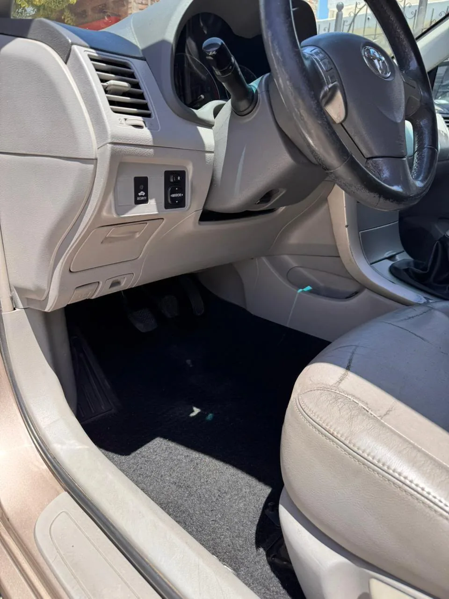
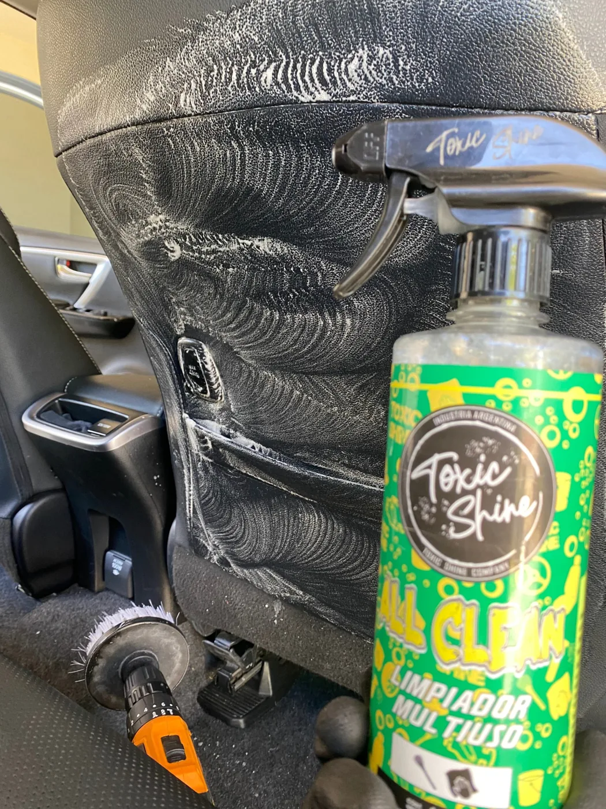
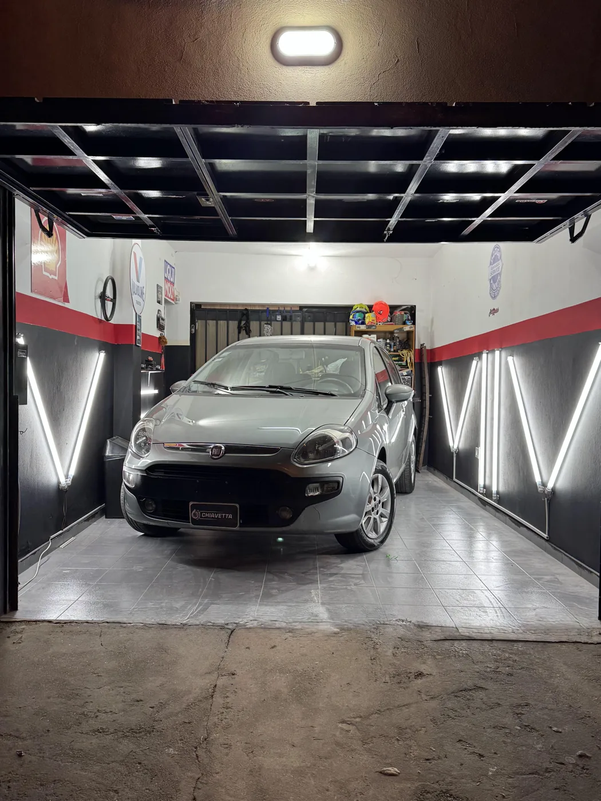
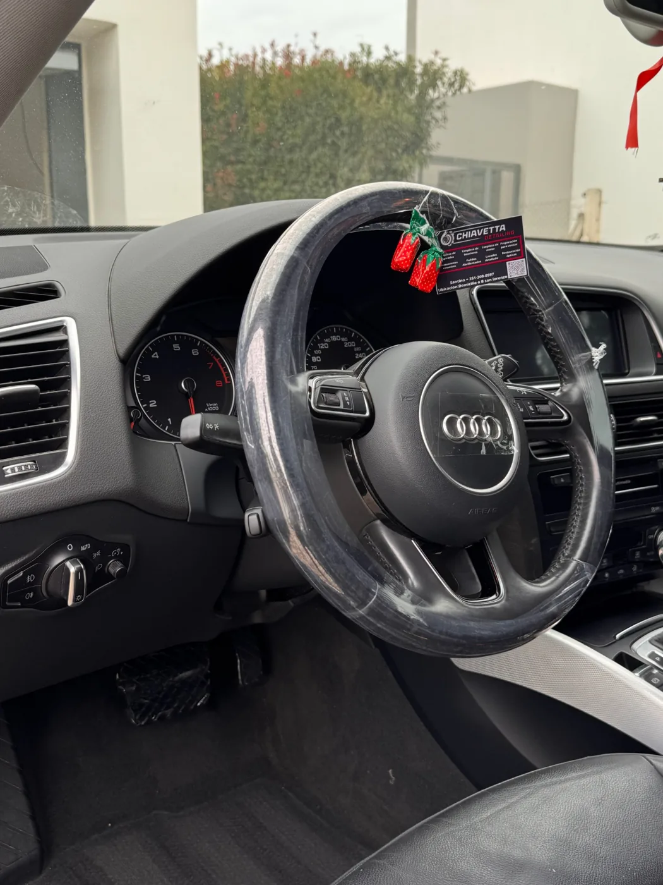
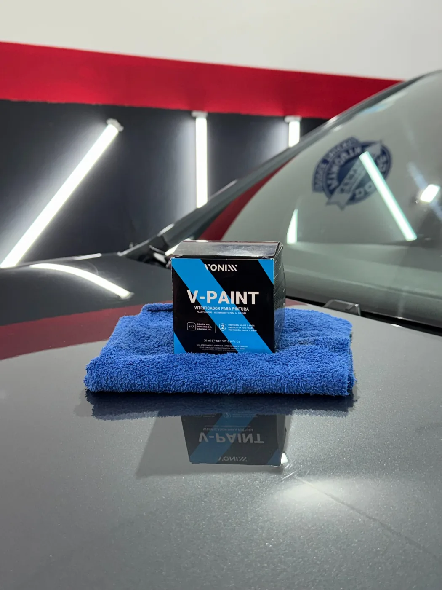
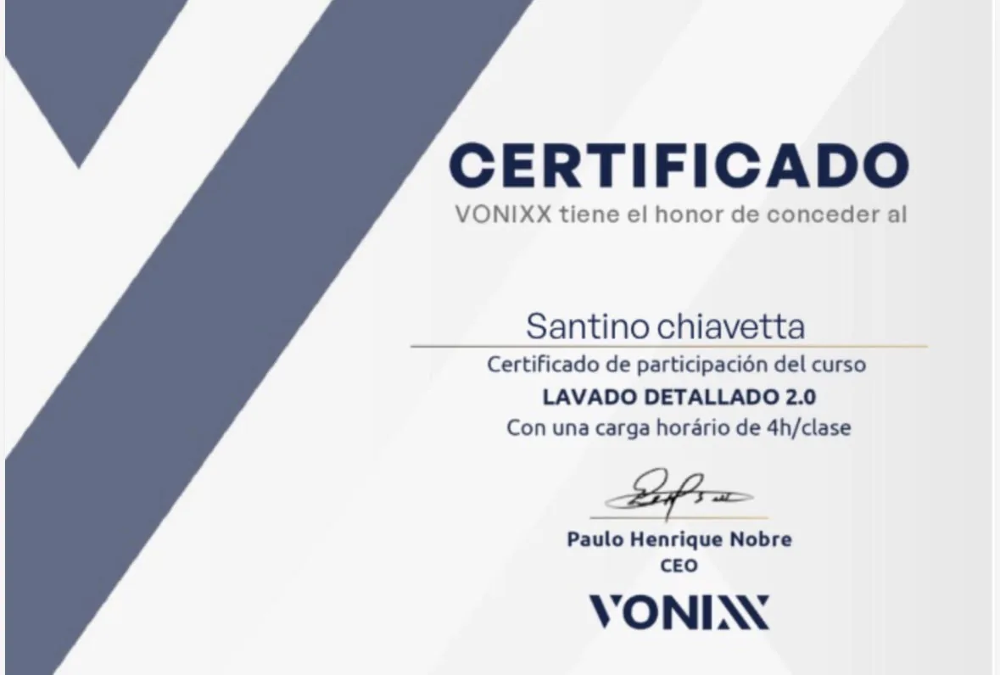

CUIDADO AUTOMOTOR · CÓRDOBA
El detalle hace
la diferencia.
Tratamientos de estética, productos profesionales y soluciones para mantener cada vehículo en las mejores condiciones.
Estética automotriz
Productos profesionales
Consignación de vehículos
Atención personalizada
01 / QUÉ HACEMOS
Cuidado integral.
Trabajo con criterio.
En Chiavetta Detailing trabajamos sobre la limpieza, recuperación y protección estética de vehículos. La propuesta reúne tratamientos para el exterior y el interior, junto con productos destinados al mantenimiento.
Conocer el emprendimiento ↗02 / SERVICIOS
Un tratamiento para
cada necesidad.

01Lavado premium
Descontaminación superficial, limpieza de llantas y acondicionamiento exterior.
Conocer servicio ↗
02Limpieza profunda
Aspirado integral, limpieza de tapizados y acondicionamiento de superficies.
Conocer servicio ↗ 03
03Corrección de pintura
Recuperación del brillo y tratamiento de marcas superficiales o defectos más profundos.
Conocer servicio ↗03 / CATÁLOGO
Herramientas para
cuidar el resultado.
Cargando selección de productos...

04 / SERVICIO COMPLEMENTARIO
Tu vehículo,
bien presentado.
Además del detailing y la venta de productos, ofrecemos un servicio de consignación de vehículos para la venta, con evaluación, presentación y gestión comercial.
Conocer consignación ↗05 / TRABAJO Y CAPACITACIÓN
El proceso también
forma parte del resultado.
Imágenes y antecedentes del trabajo vinculados con la actividad del emprendimiento.



¿LO VEMOS?